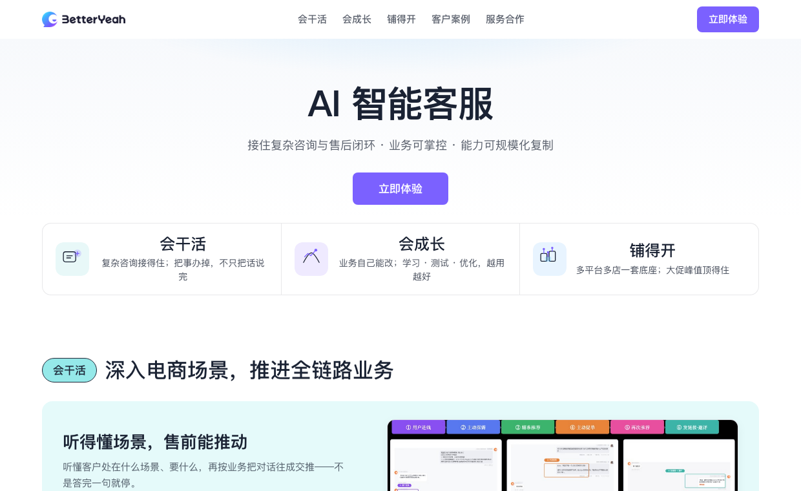
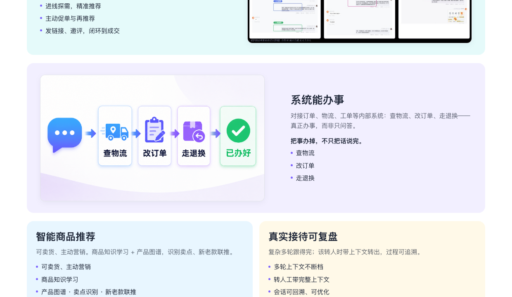
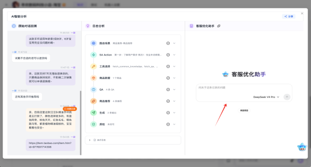
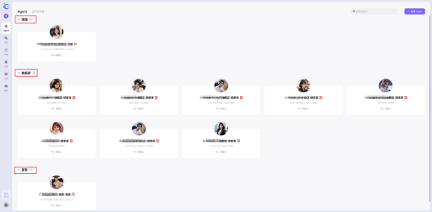

项目背景
对 KA 客户来说，官网不是功能说明书，而是采购决策的第一场辩论。我需要证明：这不是又一个「更智能客服」，而是能接住复杂业务、让业务自己变好、还能多店铺开的产品。
我的任务
独立完成调研、竞品取舍、卖点梳理、信息架构、文案与 HTML Demo。
项目结果
形成完整官网方案与可访问 Demo，进入待上线阶段。
三个关键判断
01 · 客群
不做“所有商家”
产品优势不在低价快装，而在复杂业务、多平台和多店规模，因此聚焦中大型电商品牌。
02 · 卖点
不堆行业标配
放弃把 7×24、秒回作为主卖点，改为回答客户真正关心的能力、维护和规模问题。
03 · 结构
不按功能菜单讲
按照客户“能否干活—能否持续变好—能否铺开”的采购顾虑组织整页——这是差异化叙事，而不是换皮功能墙。
设计结果
我将产品价值重构为三层证明，用真实业务场景而不是抽象 AI 概念承载内容。以下截图仅作快速预览；完整长页可直接打开，自证结构与文案密度。
完整交付物
BetterYeah AI 智能客服官网
完整 HTML Demo 已托管在本站，可独立滚动查看页面结构、文案与交互。
作品预览 · 非正式线上站点



我做了什么
- 收真能力：从销售材料、产品方案与案例中梳理可对外说清的能力边界
- 做取舍：分析竞品表达，明确学什么、不搬什么，避开功能超市
- 定主张：锁定 KA 客群，落地「会干活 / 会成长 / 铺得开」三层证明
- 做成页：设计信息架构、关键文案与转化路径，控制宣传边界，完成 HTML Demo 并推进待上线
作品基于实习期间参与的 AI 客服产品线；案例与数据按作品集展示规范处理。完整设计为待上线版本，并非正式线上站点——用 Demo 自证完成度，而不是宣称已上线。